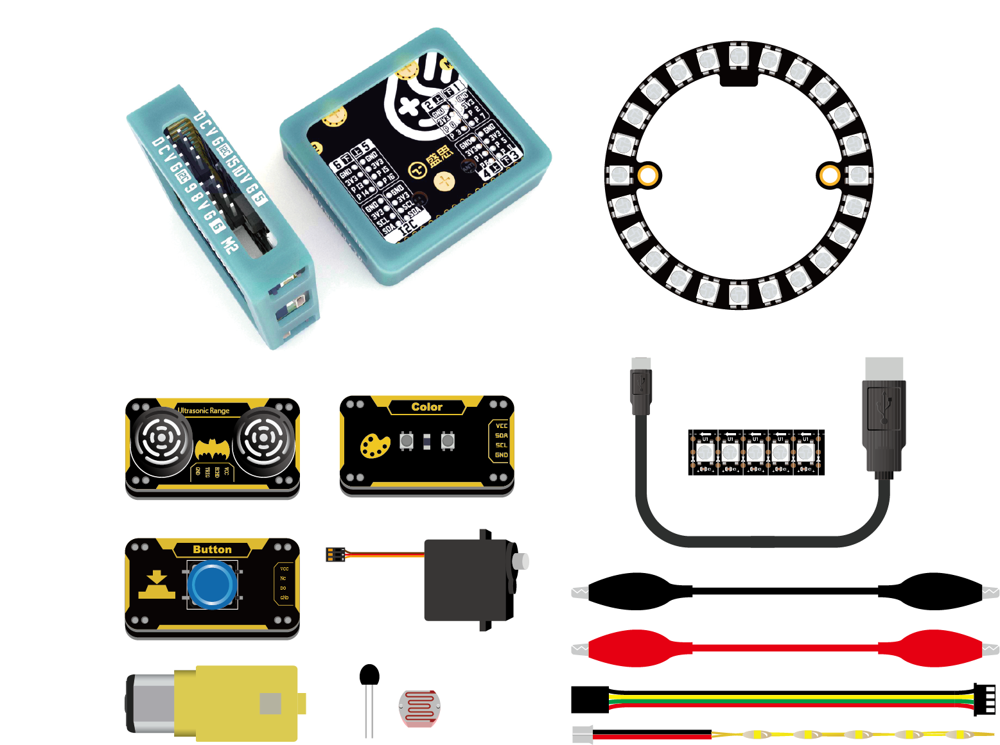

Python入门套装基础教程
{kind=link}
Python 入门套装含掌控板、掌控拓展板parrot、RGB光环板、直流电机、满天星灯带及blue:bit的(超声波，按键，颜色)模块等。可满足用户的python基础编程学习及DIY造物。 本教程讲解套装内的模块基本的使用和编程。
套装含:
名称 |
参数 |
数量 |
掌控板 |
1 |
|
掌控拓展板 |
1 |
|
RGB光环板 |
24颗 |
1 |
超声波模块 |
1 |
|
颜色模块 |
1 |
|
按键模块 |
1 |
|
RGB灯带 |
1 |
|
满天星LED灯条 |
1 |
|
TT马达 |
2 |
|
舵机 |
1 |
|
热敏电阻 |
1 |
|
光敏电阻 |
1 |
掌控拓展板
有关掌控板拓展板的基础使用可查阅 拓展板入门教程，这里不再作讲解。
拓展板的电机驱动为PWM输出。除了可以驱动马达外，还可以驱动本套件内的满天星灯带。
import parrot # 导入parrot 模块
parrot.led_on(parrot.MOTOR_1,50) # 亮度为50%
RGB光环板
它是由24颗LED WS2812 排列成外径71mm的圆环。这些灯是串联的(将一个输出引脚连接到另一个输入引脚)。只需要控制器一个引脚来控制！每个LED都可以寻址，因为驱动芯片在LED内部。 每个LED都有18mA恒流驱动，所以即使电压变化，颜色也会非常一致。
{kind=link}
有关neopixel用法，可查阅 RGB LED-外部灯带 章节 和 neopixel 模块 ，此处不再重复。
除 neopixel 模块外,mPython掌控板还提供 ledstrip 模块(neopixel增强版)，封装多种显示效果，使用简单。
使用前，先将ledstrip.py拷至掌控板:
from ledstrip import * # 导入ledstrip
from machine import Pin # 导入machine的Pin类
strip=LedStrip(pin=Pin.P15,n=24,brightness=0.5) # 实例LedStrip,引脚P15，灯数24，亮度50%
# 以下为不同效果演示
print("rainbow")
strip.rainbow()
print("rainbow_cycle")
strip.rainbow_cycle()
print("cycle")
strip.cycle((50,50,50))
print("bounce")
strip.bounce((0,0,50))
strip.clear()
print("colorWipe")
strip.colorWipe((0,50,0))
print("theaterChase")
strip.theaterChase((50,0,0))
print("theaterChaseRainbow")
strip.theaterChaseRainbow(wait=5)
print("cylonBounce")
strip.cylonBounce((0,0,50),4,10,50)
print("runningLight")
strip.runningLight((50,50,0),20)
print("meteorRain")
for i in range(5):
strip.meteorRain((100,100,100),8,60,True,20)
blue:bit模块
有关blue:bit模块的基本的使用方法，可查阅wiki了解。有关 blue:bit 模块说明,请查阅 bluebit 模块 API说明。
bluebit套装Wiki：http://wiki.labplus.cn/index.php?title=Bluebit
按键模块
按键模块的 Do 连接到拓展板的 P5 ；VCC 、GND 分别连接至掌控板的 3.3V 、GND
from mpython import * # 导入mpython模块
p5=MPythonPin(5,PinMode.IN) # 实例化MPythonPin,将按键a引脚(P5)设置为"PinMode.IN"模式
while True:
value=p5.read_digital() # 读取P5引脚的数字输入
oled.DispChar("Button:%d" %value,30,20) # 将读取到值显示至oled上
oled.show() # 刷新
oled.fill(0) # 清屏
按键模块，当按键按下Do输出高电平，未按则低电平。有关掌控板引脚的数字输入，请查阅 引脚-数字输入 章节。
超声波模块
超声波模块的 TRIG、ECHO 连接到拓展板的 SCL 、SDA ；VCC 、GND 分别连接至拓展板的 3.3V 、GND
from bluebit import * # 导入bluebit
from mpython import * # 导入mpython
ultr=Ultrasonic() # 实例Ultrasonic类
while True:
data=ultr.distance() # 读取超声波测距值
oled.DispChar("超声波：%d" %data,30,20) # oled显示数据
oled.show() # 刷新
oled.fill(0) # 清屏
颜色模块
颜色模块的 SCL、SDA 连接到拓展板的 SCL 、SDA ；VCC 、GND 分别连接至拓展板的 3.3V 、GND
from bluebit import * # 导入bluebit
from mpython import * # 导入mpython
color=Color() # 实例Color类
while True:
c=color.getRGB() # 获取颜色的RGB值，返回(r,g,b)数组
oled.DispChar("R:%d,G:%d,B:%d" %(c[0],c[1],c[2]),10,20) # oled显示数据
print(c) # 打印RGB值
oled.show() # 刷新
oled.fill(0) # 清屏
sleep_ms(500) # 延时
颜色模块工作时，rgb灯会发出RGB颜色的光，将被测物体置于距颜色传感器1CM左右，通过被测物反射回来的颜色光线来测量物体的颜色。
由于颜色传感器受外界光线影响大，使用是需要注意光线因素，避免影响测试数据。getRGB() 是 Color 类的获取被测物颜色的rgb的方法，你还可以使用 getHSV() 获取被测物的HSV颜色值。
光/热敏电阻
光敏、热敏电阻为阻性元件，阻值与环境的光、热呈某些关系变化。由此，我们可以通过测量电阻的电压变化，来感知外界环境的变化！
通过鳄鱼夹线将阻性元件(如光敏、热敏电阻)接到掌控板的 EXT 和 GND 焊盘，读取P3引脚的模拟输入:
from mpython import * # 导入mpython模块
p3=MPythonPin(3,PinMode.ANALOG) # 实例化MPythonPin,将P3设置为"PinMode.ANALOG"模式
while True:
value=p3.read_analog() # 读取EXT(P3)引脚模拟量
oled.DispChar("analog:%d" %value,30,20)
oled.show()
oled.fill(0)

Hint
有关掌控板引脚的模拟输入详细的使用，请查阅 引脚-模拟输入 章节。